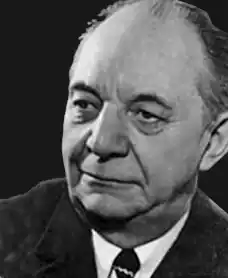

(10.06.1907 — 15.02.1987)
Радянський письменник, який написав капітана Врунгеля
Народився в 1907 році в Москві. У 1926 році переїхав у Київ і вступив матросом на риболовецьке судно. Потім ходив на різних судах в районах Крайньої Півночі і Далекого Сходу. У 1933 закінчив Владивостоцький морський технікум. У этомже році призначений заступником начальника морського управління тресту "Дальморзверпром". Друкувався з 1928 року. Найбільшу популярність його творів отримав гумористичний роман "Пригоди капітана Врунгеля". З квітня 1942 пересічний на Західному фронті, з осені 1942 співробітник фронтової газети. Член СП СРСР з 1943. З листопада 1943 в резерві ГлавПУРа в Москві. 14 квітня 1944 року в званні лейтенанта був засуджений Військовим трибуналом Ростовського-на-Дону гарнізону на 3 роки ВТТ.